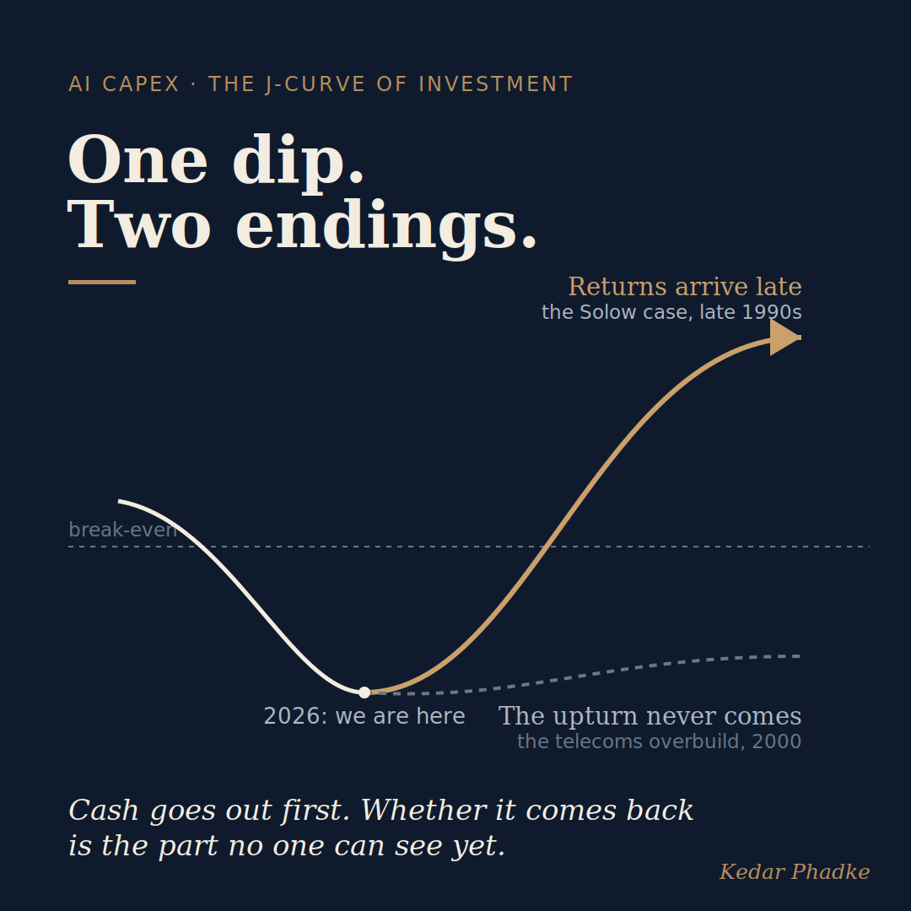

Everyone Can See the AI Spending. Where Are the Returns?
In the second quarter of 2026, Alphabet reported its highest-ever revenue at $119.8 billion, a 24 percent increase from last year. Yet, during those same months, it saw negative free cash flow for the first time since going public in 2004. The company also posted a record net profit, but most of that came from unrealised gains on investments, not actual business earnings. The headline numbers and the cash flow told different stories.
Around the same time, Goldman Sachs noted that AI spending per employee at US companies has jumped this year, with the median monthly spend more than doubling. Still, the overall impact on earnings has been limited so far.
These two facts raise a tough question. Where are the returns?
The Solow Clock Is Running Again
Back in 1987, economist Robert Solow made a point that still stands out today. He said you could see the computer age everywhere except in the productivity statistics. Companies had been buying computers for fifteen years, but the real payoff did not show up until the late 1990s.
This idea became known as the Solow productivity paradox. It did not mean computers failed. Instead, it showed that big technologies often deliver economic returns much later than expected. Spending happens quickly, but real value comes from slower changes like reorganising work, retraining staff, and redesigning processes. Money goes in long before the benefits appear.
Now, we are seeing the same pattern start again.
The J-Curve, and Its Two Endings
In investing, a J-curve shows how big, long-term commitments usually work. Cash flow drops at first, and returns only come later if things go as planned. Private equity, major infrastructure, and long research projects all follow this pattern. The real risk is not the early dip. It is thinking the dip is all there is, or assuming the recovery will definitely happen.

Amazon, Microsoft, Meta, and Alphabet together plan to spend about $700 billion on capital projects in 2026, nearly double last year's amount. These companies are some of the smartest capital allocators around, so their choices are intentional. But a J-curve can end in two ways. The upturn arrives, or it does not. Solow's story is the hopeful example. The telecom overbuild in 2000, when companies installed much more fibre than needed, is the warning.
A large capex number is not reassurance. It is the easy part.
What It Means for Anyone Allocating Capital
If you are on a board or investment committee thinking about AI spending, the key question is not whether AI works. It is about how long it will take to see returns, and whether that timeline fits your company's finances. Betting on quick earnings means taking on duration risk, not just technology risk. These are different risks and need different questions.
The leading indicator to watch, long before the financials move, is whether an organisation is redesigning how work actually gets done around AI, not simply how much of it the organisation has bought.
If you are early in your career, there is a lesson here. The Solow paradox was eventually solved, but not for everyone. Some companies gained from the computer age, while many missed out because they did not change how they worked. We will likely see the same split now. The skills that matter most, organisational and analytical, are the ones to focus on building.
In my view, the timing comparison makes sense, but it should not be too reassuring. The computer era rewarded companies that changed how they worked, not just those that spent the most. With AI, the tools are cheaper and more accessible, so big spending does not guarantee an advantage. What really matters is how well an organisation adapts. A large capital expense is just the easy part.
Goldman says the earnings gap is just a matter of timing. I think part of it is structural and may never fully close, since success will depend on how organisations adapt, not just on spending. Which side are you on, and what would make you change your mind?
#AI #InvestmentFinance #Economics #FutureOfWork #ProductivityThe anchor here is a primary earnings disclosure and independent reporting, not a vendor or marketing source.
Sources
- Alphabet Q2 2026 results (reported 22 July 2026): revenue of $119.8 billion, up 24 percent; free cash flow of about negative $5.9 billion, the first negative quarter since the 2004 IPO; capital expenditure of $44.9 billion; full-year guidance raised to $195 to $205 billion. Coverage at MLQ and BigGo Finance.
- The record net profit being mostly non-cash: roughly $99 billion of the $112.1 billion in net income came from unrealised gains on investment stakes, with operating income of $40.8 billion. TECHi analysis of the Q2 2026 results.
- Goldman Sachs research note, August 2026, on AI spending per employee at US firms more than doubling while the aggregate earnings impact so far remains limited. Reported across multiple business outlets from a single Goldman document; treated here as directional.
- The roughly $700 billion of 2026 capital spending is an aggregate of the separate full-year guidance given by Amazon, Microsoft, Meta, and Alphabet in their earnings calls, not a single official figure.
- Robert Solow, "We'd Better Watch Out," New York Times Book Review, 12 July 1987, the origin of the productivity paradox.
A version of this essay was first shared on LinkedIn.